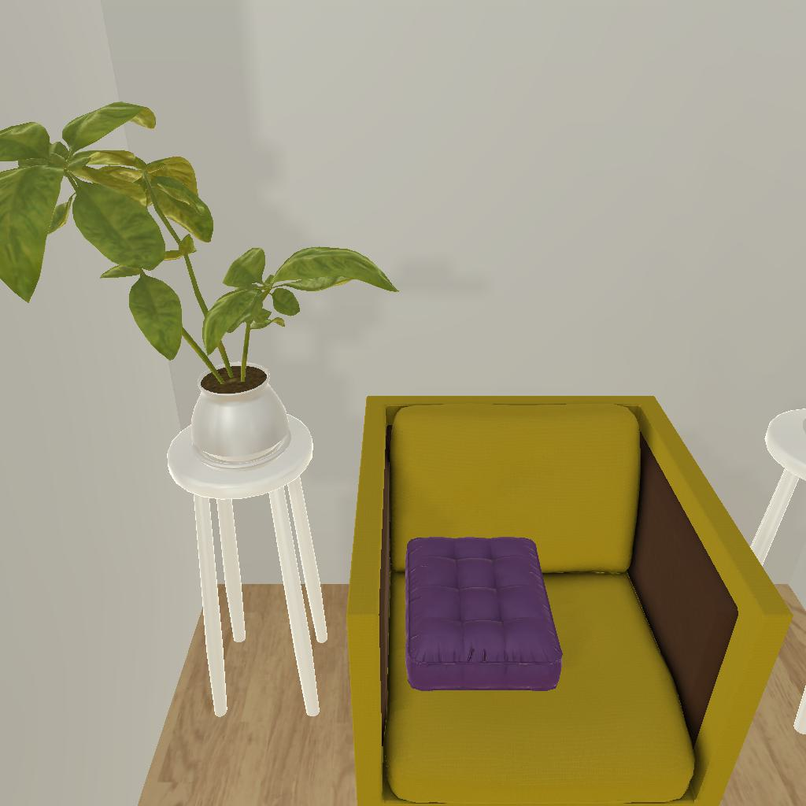

---------------------------------------------------------task: 4---------------------------------------------------------
--------------------------------------------------------------------------------------------------------------------------------------------------------------------
--------------------------------------------------------------------------------------------------------------------------------------------------------------------
Step:--------------------------------------------------------------------------2-------------------------------------------------------------------------------
----------------------------------------
VLM Prompt:
Image1:
Image2:
Image3:
**Instruction**
1. Analyze the provided images to identify all visible household objects and compare the difference between images (e.h. whether the object is opened or not and taken on hand or not), focusing on those relevant to the task description "examine the statue with the floorlamp."
2. Use the analysis of images and the task hint "The agent must find an object of the desired type, locate and turn on a light source with the desired object in-hand." to answer the question: what is the most reasonable action in the choices for the task description "examine the statue with the floorlamp"?
3. Decide and write the answer using the template: The answer is: (i): , where i is the real number. If there is no desired object in images, search every place based on **Initial Observation** to find the object. And if no one is exactly correct, choose a similar answer.
**Initial Observation**
You are in the middle of a room. Looking quickly around you, you can see armchair (1), coffeetable (1-2), sidetable (1), garbagecan (1), drawer (1), sofa (1), diningtable (1)
**Answer Choices**
(1): go to coffeetable 1
(2): go to sidetable 1
(3): go to garbagecan 1
(4): go to sofa 1
(5): go to coffeetable 2
(6): go to diningtable 1
(7): open drawer 1
(8): close drawer 1
(9): examine drawer 1
**Answer**
Let's think step by step by following the instructions.
----------------------------------------
----------------------------------------
Original Response:
1. Analyzing the images:
Image1: We can see a lamp on a sidetable next to a sofa, but the lamp is not turned on.
Image2: A chair with a purple pillow, and a sidetable with a plant on it. No statue or floor lamp visible.
Image3: A statue on a white table (coffeetable) and a pen. No floor lamp visible.
2. Based on the task hint, we need to find a statue and a light source. In image3, we have identified a statue. For the light source, the floor lamp from image1 could be the desired object, but it is not turned on.
3. Using the template:
The answer is: (5): go to coffeetable 2
Reasoning: As we have seen the statue on coffeetable 2 (from image3), and the task is to examine the statue with the floor lamp, the agent should go to the coffeetable 2 to pick up the statue. Then, the agent should proceed to turn on the lamp (from image1) to examine the statue with the floor lamp, which would be the next logical step after reaching the statue. Since there is no action listed for turning on the lamp, the most reasonable action from the choices given is to go to the location of the statue.
----------------------------------------
----------------------------------------
>>> Refine Original VLM Response and Get Pure Action: go to coffeetable 2
Reasoning: As we have seen the statue on coffeetable 2 (from image3), and the task is to examine the statue with the floor lamp, the agent should go to the coffeetable 2 to pick up the statue
----------------------------------------
-----------------------------------------------------------------
Running time: 10.701592922210693 seconds
Total Money: 1.6198599999999999
-----------------------------------------------------------------
-----------------------------------------------------------------
Text Observation:Nothing happens.
-----------------------------------------------------------------
UNSUCCEED